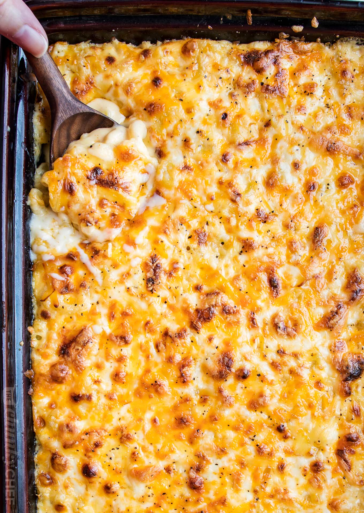

Mac n Cheese Recipe

Description
Macaroni and cheese, also known as mac and cheese, is a dish of pasta in a cheese sauce that is often baked in a casserole.
It is a popular comfort food in the United States and Canada.
Ingredients
- Elbow Macaroni
- Butter and flour
- Milk
- Cheese
- Paprika
Steps
- Cook the macaroni. Boil the macaroni for 2 minutes less than the package instructions for al dente because they will continue to cook in the oven.
- Make the cheese sauce Cook flour in melted butter until golden, whisk in milk or half-and-half, bring the sauce to a boil, and cook until thickened.
Remove from heat and whisk in shredded cheese.
- Layer with more cheese. Pour half of the mac and cheese into a baking dish, add a layer of shredded cheese, top with the remaining mac and cheese, and finish with even more cheese.
- Bake the mac and cheese. Bake just until bubbling around the edges and the cheese melts and turns golden-brown in spots.